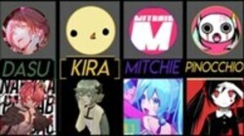
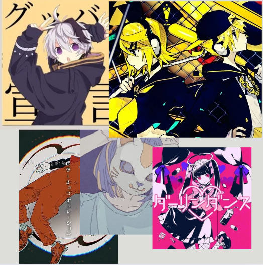

Songs and Musics
Vocaloid songs are a genre of music created using vocal synthesis software like Vocaloid, featuring virtual singers known as Vocaloids. Users can input lyrics and melody to generate singing performances. Popular Vocaloids like Hatsune Miku have their own fan bases. The genre spans various music styles, with many songs created by independent artists. Vocaloid songs have gained widespread popularity, with millions of views online and live concerts featuring holographic projections of virtual singers. Overall, Vocaloid songs represent a blend of technology, music, and creativity enjoyed by fans globally.
Vocaloid Producers
Vocaloid producers, also known as "Vocaloid producers" or "Vocaloid composers," are individuals or groups who create music using Vocaloid software to produce songs sung by virtual singers. These producers play a crucial role in the Vocaloid music community by composing, arranging, and producing original songs that showcase the capabilities of Vocaloid technology.
Vocaloid producers often have their own unique styles and artistic visions, ranging from catchy pop tunes to experimental electronic compositions. They work with different Vocaloid characters to bring their songs to life, selecting specific Vocaloids based on their vocal characteristics and tone to match the mood of the song.
Many Vocaloid producers upload their music to online platforms such as YouTube, Nico Nico Douga, and SoundCloud, where they can reach a wide audience of Vocaloid fans. Some producers also release albums or collaborate with other artists to create compilation albums featuring various Vocaloid songs. Vocaloid producers are integral to the growth and diversity of the Vocaloid music scene, contributing to the vast library of Vocaloid songs enjoyed by fans worldwide. Their creativity and talent have helped shape the evolving landscape of Vocaloid music and have inspired a new generation of musicians and creators to explore the possibilities of virtual singers and vocal synthesis technology.
Some well-known Vocaloid producer
Producer |
|||
|---|---|---|---|
| Ryo(supercell) | DECO*27 | Pinocchio-P |
Some popular Vocaloid song
Mesmerizer by 32ki
"Mesmerizer" by 32ki is a Vocaloid song known for its energetic and catchy melody, often accompanied by dynamic visuals. The song's lyrics revolve around themes of obsession, desire, and the power of attraction. It portrays a character who is deeply captivated, almost hypnotized, by someone or something, to the point where they feel lost in their feelings. The title "Mesmerizer" reflects this idea of being entranced or spellbound.
Shoujo Rei by mikitoP
"Shoujo Rei" by MikitoP, featuring Hatsune Miku, tells the tragic story of a young girl who dies and becomes a ghost. The song explores themes of unrequited love, accidental death, and the lingering presence of unresolved emotions. Told from the girl's perspective, it reflects her sorrow and the feeling of being trapped between life and death. The haunting music and visuals enhance the melancholic and eerie atmosphere, making it a poignant narrative about loss and grief.
Non-Breath Oblige by Pinocchio-P
"Non-Breath Oblige" by PinocchioP, featuring Hatsune Miku, critiques societal pressure and the demand for conformity. The song explores the suffocating effects of trying to meet overwhelming expectations, leading to feelings of exhaustion and frustration. Its intense, repetitive music and visuals emphasize the dehumanizing impact of these pressures, highlighting the struggle to maintain individuality in a demanding society.
Vocaloid songs have revolutionized the music industry by seamlessly blending technology and creativity. These digital vocal synthesizer productions have democratized music creation, allowing independent artists to produce professional-quality vocals without traditional singers. This technological innovation has fostered a vibrant, participatory fan culture where enthusiasts both consume and create content, blurring the lines between artist and audience. Vocaloid technology has also pushed the boundaries of live performances through holographic concerts, offering a glimpse into a future where digital and physical realities converge. By challenging conventional notions of musicianship and performance, Vocaloid songs have opened new avenues for artistic expression and continue to inspire innovation at the intersection of technology and art. As this technology evolves, its influence on pop culture and the future of music and entertainment is likely to grow, cementing its place as a transformative force in the industry.